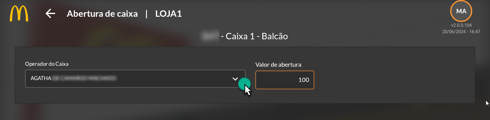
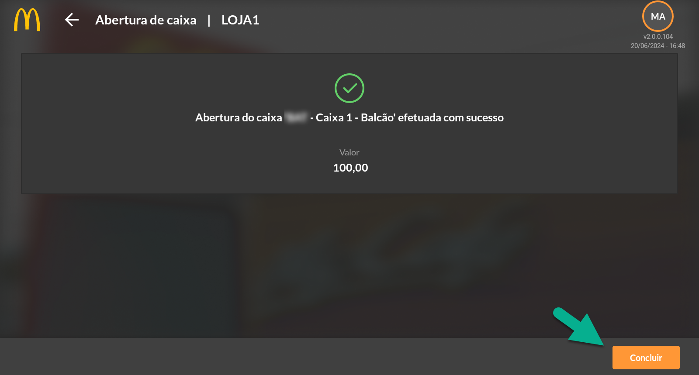
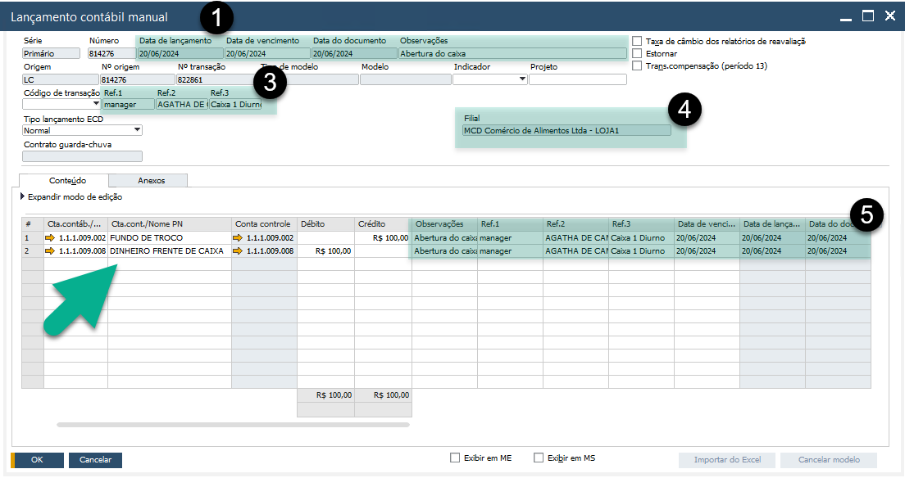
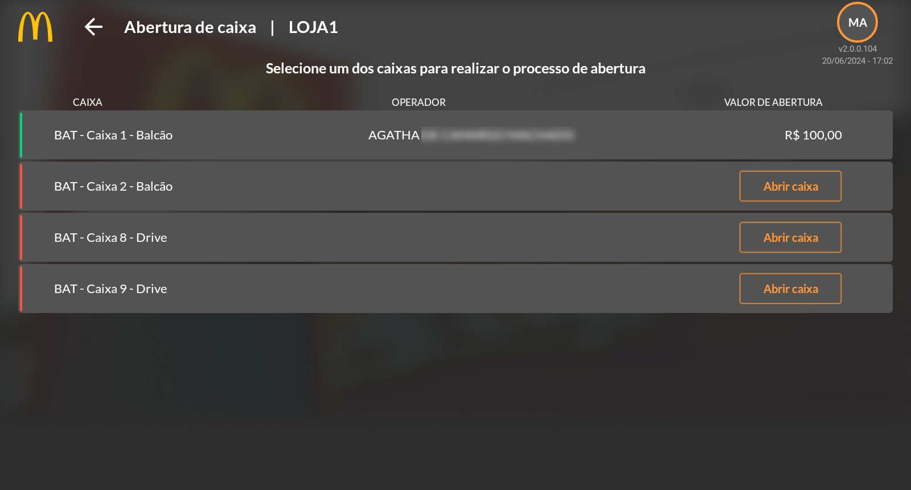

Abertura de Caixa
Nesta etapa, é necessário efetuar a abertura dos caixas disponíveis. Clique em “Abertura de Caixa” para abrir a tela de seleção.

Selecione o Caixa e clique em “Abrir Caixa”. Será exibida a tela para abertura. Basta selecionar o operador/colaborador e informar o valor que será aberto o caixa.
{kind=link}
No rodapé da página, clique em “Abrir”. Uma mensagem com a conformação da abertura irá aparecer na tela, basta clicar em concluir.
{kind=link}
A operação irá gerar no SAP um Lançamento Contábil Manual. Considerando que os valores para abertura de caixa são de origem do cofre Fundo de Troco, será realizado um DÉBITO na conta Frente de Caixa com um CRÉDITO na conta Fundo de Troco como contrapartida. Veja o lançamento na imagem a seguir:
{kind=link}
O cabeçalho do LCM será preenchido com as informações inseridas pelo APP. Como: Data de Lançamento, Data do Vencimento, Data do Documento e Observações (1). As informações preenchidas com o usuário do aplicativo (gerente responsável), colaborador que deu origem a abertura e caixa ficarão disponíveis para visualização nos campos Ref.1, Ref.2 e Ref.3 (3). Veja a loja de origem do lançamento em filial (4). As mesmas informações que integram o cabeçalho são copiadas para as colunas na linha do lançamento (5).
Ao retornar a tela de seleção de caixa para abertura, note que o caixa aberto estará representado pela cor verde, considerando que ele está aberto.
{kind=link}
IMPORTANTE: Sempre verifique se está abrindo caixa no seu turno e não em outro turno aberto anteriormente não fechado pelo gerente anterior. O lançamento de informação em turno errado acarretará erros nos Lançamentos Contábeis Manuais, afetando o processo operacional de loja e escritório. No SAP, aos lançamentos, após finalizados, não podem ser excluídos, sendo assim seu registro ficará permanente na base de dados. A correção somente será possível por meio de cancelamento de LCM e ajuste.
Com o caixa aberto, serão habilitadas as opções de lançamentos de sangria, estorno de sangria e fechamento de caixa. Veremos nos próximos tópicos.